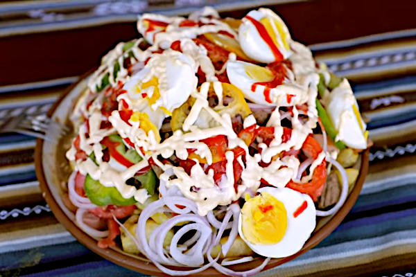
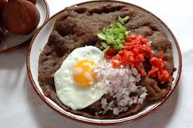

La Paz
Salteñas
Empanadas jugosas rellenas de carne, pollo o verduras.
Sabores que cuentan la historia de cada región del país.
Empanadas jugosas rellenas de carne, pollo o verduras.

Plato abundante con carne, papas fritas, salchicha y huevo.

Sopa tradicional elaborada con maní molido y carne.

Plato cochabambino con arroz, carne empanizada, huevo y papas.